目錄設定
目錄設定包含啟用商品排序、更改檢視模式、比較商品等選項。
若要定義目錄設定，請前往 設定 → 設定 → 目錄設定。目錄設定頁面提供 進階 與 基本 兩種模式（預設為進階模式）。
此頁面支援多商店設定；這意味著可以為所有商店定義相同的設定，或是針對不同商店設定不同的值。如果您想要管理特定商店的設定，請從多商店設定下拉式清單中選擇該商店名稱，並勾選左側所需的核取方塊，以便為其設定自訂數值。如需進一步詳情，請參閱 多商店。
人工智慧
此功能將 人工智慧 (AI) 服務直接整合至平台中，以自動化建立商品描述與搜尋引擎最佳化 (SEO) meta 標籤，包含 Meta Title、Meta Description 與 Meta Keywords。
此功能內建於核心應用程式中，並支援三種熱門的 AI 服務提供者：
- DeepSeek
- Gemini
- ChatGPT
Note
同一時間只能啟用一個提供者。
所有相關設定皆可在 目錄設定 (Catalog settings) 頁面的 人工智慧 (Artificial Intelligence) 區段中找到。
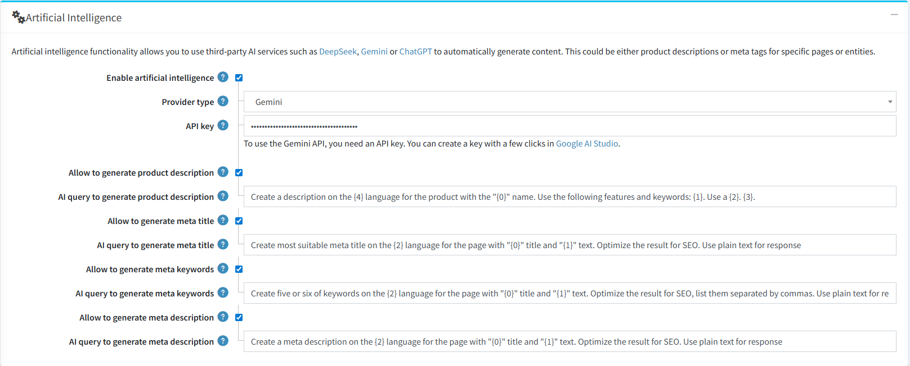
主要設定選項包含：
- 啟用人工智慧 (Enable artificial intelligence)：您可以啟用或停用整體 AI 生成功能。您也可以獨立啟用或停用 SEO 欄位的生成。
- 提供者類型 (Provider type)：下拉式選單可讓您選擇上述三種支援的 AI 提供者，用於內容生成。
- 提示詞範本 - AI 生成查詢 (Prompt Templates - AI query to generate[..])：所有傳送至 AI 服務的 API 請求範本皆可編輯。這讓進階使用者能夠自訂並微調提示詞，以更符合其特定需求。
生成商品描述
前往商品編輯頁面。**「使用 AI 生成描述」**按鈕位於商品描述編輯器正下方。
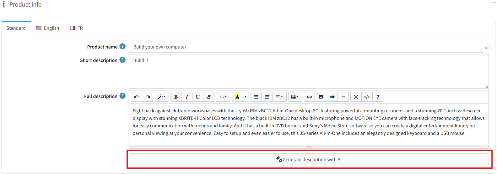
點擊該按鈕會開啟一個設定視窗。
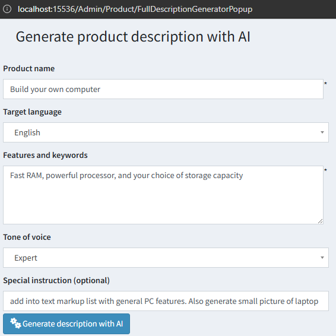
在此，您可以調整要傳送給 AI 服務以生成描述的參數。以下欄位為必填：
- 商品名稱
- 目標語言
- 功能與關鍵字
- 語氣
- 您也可以提供任何 特別說明 來引導 AI。
點擊彈出視窗中的 「使用 AI 生成描述」 按鈕以送出請求。
- 成功時：生成的文字將會顯示在視窗中。您可以將其直接 儲存 到商品描述欄位，或 複製到剪貼簿。如果您對結果不滿意，可以再次點擊「生成」按鈕以取得新版本。
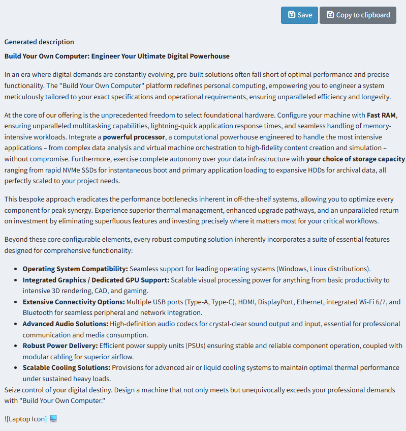
- 失敗時：如果在生成過程中發生錯誤，視窗將顯示錯誤訊息而非生成的文字，訊息中通常會包含指向記錄檔的連結，以便進行除錯。
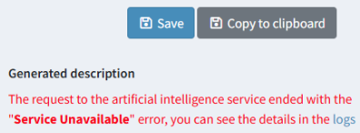
產生 SEO Meta 標籤
在商品編輯頁面的 SEO 區段中，每個 meta 標籤區塊皆包含一個 「使用 AI 產生 meta 標籤」(Generate meta tags with AI) 按鈕。
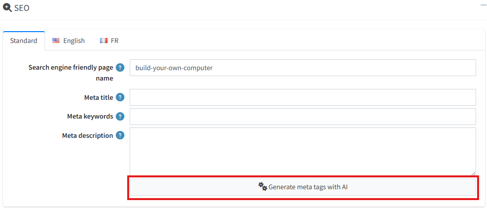
點擊此按鈕將會自動為所有符合以下條件的 SEO 欄位產生內容：
- 在設定中已啟用產生功能的欄位。
- 目前為空的欄位（此工具不會覆蓋現有手動輸入的資料）。
Important
如果您對作為產生基礎的欄位進行了修改（例如商品名稱或簡短描述）但尚未儲存，系統將會提示您先儲存變更，然後再傳送請求至 AI 服務。
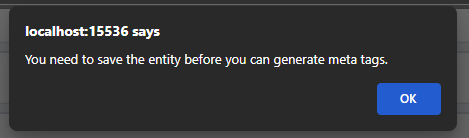
設定搜尋
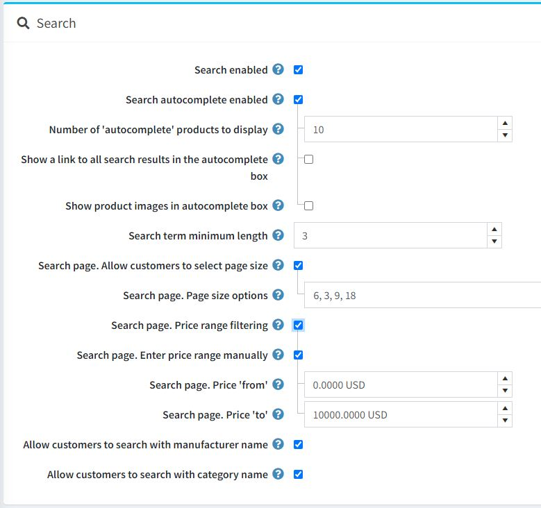
頁面頂端的面板用於設定 搜尋 功能：
若您希望在前台網站啟用搜尋功能，請勾選 搜尋已啟用 (Search enabled) 核取方塊。
勾選 搜尋自動完成已啟用 (Search autocomplete enabled) 核取方塊，即可在前台網站顯示自動完成搜尋方塊，如下所示：
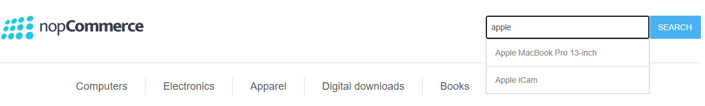
啟用此選項後，將會顯示下列額外欄位：
- 要顯示的「自動完成」商品數量 (Number of 'autocomplete' products to display)：設定在前台網站搜尋方塊的自動完成下拉式清單中，可見的搜尋結果數量。
- 勾選 在自動完成方塊中顯示所有搜尋結果的連結 (Show a link to all search results in the autocomplete box) 核取方塊，即可在自動完成搜尋方塊中顯示指向所有結果的連結。當找到的項目數量大於自動完成方塊中設定的顯示數量時，此連結將會顯示。
- 勾選 在自動完成方塊中顯示商品圖片 (Show product images in autocomplete box) 核取方塊，即可啟用在自動完成搜尋方塊中顯示商品圖片的功能。
搜尋字詞最小長度 (Search term minimum length)：搜尋時所需的最少字元數。
若您希望允許顧客從預定義的選項清單中選擇每頁顯示數量，請勾選 搜尋頁面。允許顧客選擇每頁顯示數量 (Search page. Allow customers to select page size) 核取方塊。
- 在 搜尋頁面。每頁顯示數量選項 (Search page. Page size options) 欄位中，輸入以逗號分隔的每頁顯示數量選項，供顧客選擇，或是輸入您希望在搜尋商品頁面上顯示的商品數量。
- 若停用 搜尋頁面。允許顧客選擇每頁顯示數量 設定，則會顯示 搜尋頁面。每頁商品數 (Search page. Products per page) 欄位。請在此欄位中輸入您希望在搜尋頁面上顯示的商品數量。
若您希望啟用依價格範圍進行篩選，請勾選 搜尋頁面。價格範圍篩選 (Search page. Price range filtering) 核取方塊。
- 若您希望手動輸入價格範圍，請勾選 搜尋頁面。手動輸入價格範圍 (Search page. Enter price range manually) 核取方塊。
- 若上述設定已啟用，請輸入 搜尋頁面。價格「從」(Search page. Price 'from')。
- 以及 搜尋頁面。價格「到」(Search page. Price 'to')。
- 若您希望手動輸入價格範圍，請勾選 搜尋頁面。手動輸入價格範圍 (Search page. Enter price range manually) 核取方塊。
若啟用 允許顧客使用製造商名稱搜尋 (Allow customers to search with manufacturer name)，顧客將能以製造商名稱進行搜尋。
若啟用 允許顧客使用類別名稱搜尋 (Allow customers to search with category name)，顧客將能以類別名稱進行搜尋。
Note
標準的 nopCommerce 搜尋依賴精確匹配，因此若您希望提升網站搜尋的速度與相關性，我們建議使用全文檢索 (Full-text Search)。與標準搜尋不同，全文檢索會分析整個網站的內容以檢索出最相關的結果。自動完成與拼字容錯功能可最佳化搜尋速度，並協助使用者精確找到他們所需的內容。
商品評論
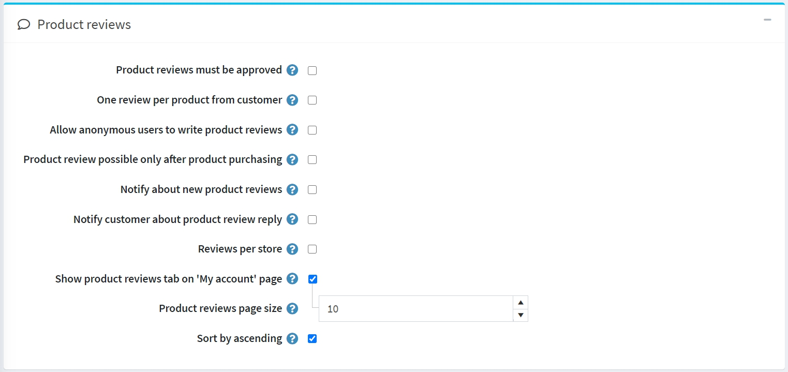
第二個面板用於設定 商品評論。請定義以下項目：
- 商品評論必須經過核准：強制要求商品評論在公開發布前，必須先由商店管理員進行核准。
- 顧客對每個商品僅限一則評論：限制顧客對每個商品只能新增 1 則評論。
- 允許匿名使用者撰寫商品評論：允許匿名使用者撰寫商品評論。
- 僅在購買商品後才能進行商品評論：僅允許已訂購該商品的顧客撰寫評論。
- 通知新商品評論：當有新的公開評論時，通知商店擁有者。
- 通知顧客關於商品評論的回覆：當商品評論獲得回覆時，通知顧客。
- 每個商店的評論：僅顯示當前商店的評論（於商品詳細資料頁面上）。如果您希望顧客看到該商品在您所有商店中的評論，請取消勾選此核取方塊。
- 在「我的帳戶」頁面顯示商品評論分頁：允許顧客在「我的帳戶」頁面查看他們所有的評論。
- 商品評論分頁大小：設定每頁顯示的評論數量。
- 以升序排序：將商品評論依建立日期進行升序排列。
評論類型
下一個區塊用於設定 評論類型 (Review types)。如果您認為基本的評論功能不足，可以自行設定一系列的評論類型。
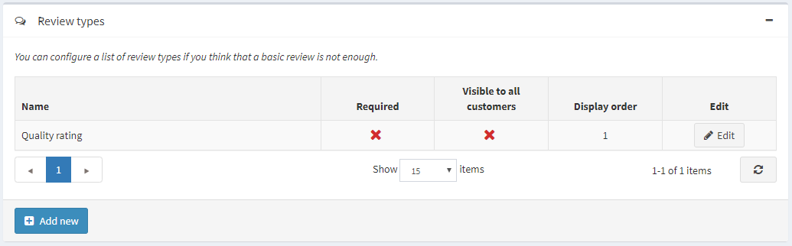
點擊 新增 (Add new) 按鈕來建立新的評論類型。
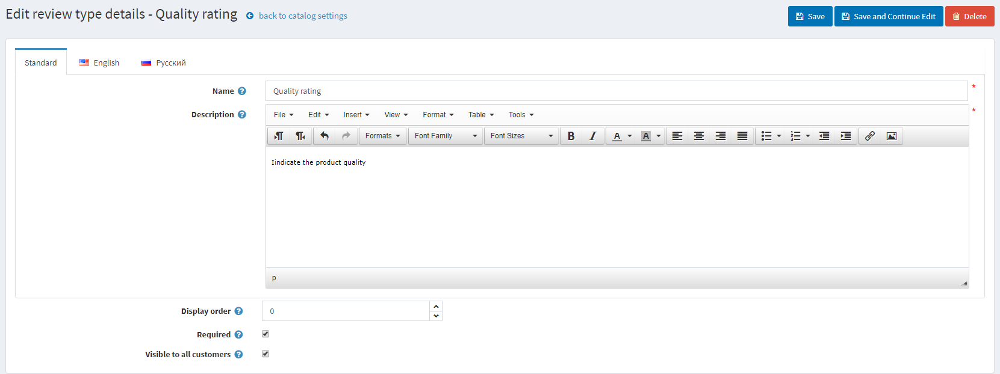
定義以下欄位：
- 輸入評論類型的 名稱 (Name)。
- 輸入評論類型的 描述 (Description)。
- 定義 顯示順序 (Display order)。
- 若勾選 必填 (Required)，顧客必須先選擇適當的評分值才能繼續。
- 對所有顧客顯示 (Visible to all customers) 可設定該評論類型是否對所有顧客顯示。
點擊 儲存 (Save) 按鈕以新增評論類型。
現在，顧客將能夠在前台網站的商品評論頁面上填寫額外的評分。
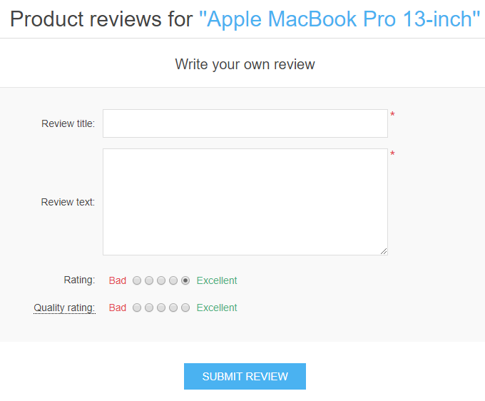
在此頁面上，您也可以查看所有顧客留下的意見回饋（若此設定已啟用）。在顧客的個人帳戶頁面上，同樣可以瀏覽該顧客對商品所留下的所有評論。
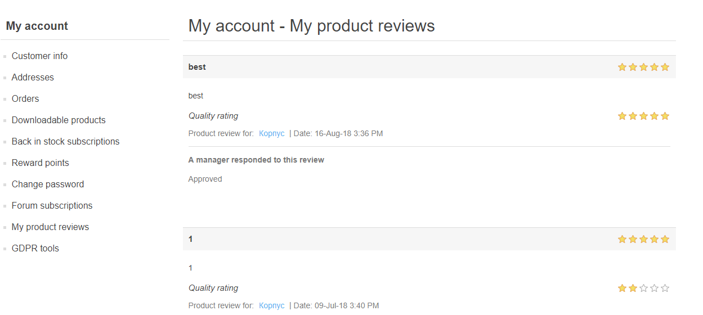
效能
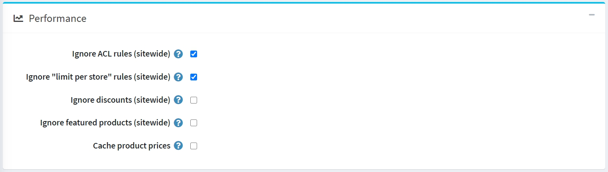
下一個面板用於設定 效能。啟用下列設定可以顯著提升商店的效能：
- 忽略 ACL 規則 (全站)：關閉為實體所設定的 ACL 規則。
- 忽略各商店限制 (全站)：允許忽略為實體設定的各商店限制規則。如果您只有一家商店或是沒有任何針對特定商店的限制，建議啟用此設定。請參閱 多重商店 章節以了解更多關於多重商店的資訊。
- 忽略折扣 (全站)。
- 忽略精選商品 (全站)。
- 快取商品價格：如果您使用了複雜的折扣、折扣需求規則或優惠碼，則不應啟用此項。
分享
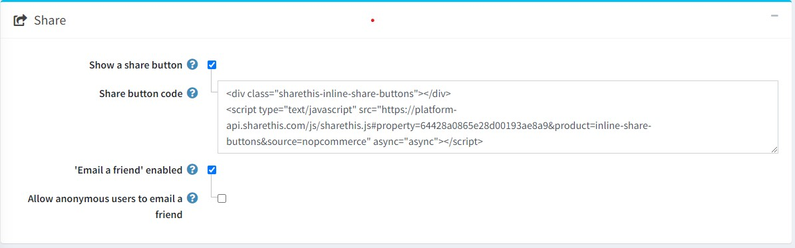
「分享」面板中的分享選項，可讓您設定讓顧客在他們的社群媒體網路上分享商品的機會。這些選項將以小圖示的形式顯示在商品頁面上。若要設定分享選項：
勾選 顯示分享按鈕 (Show a share button)，即可在商品詳細頁面上顯示分享按鈕。當勾選此欄位時，系統會顯示 分享按鈕程式碼 (Share button code) 欄位。
分享按鈕程式碼 (Share button code) 欄位會顯示頁面的按鈕程式碼。
Note
預設使用 ShareThis 服務 (https://sharethis.com/)。
分享連結的外觀如下：
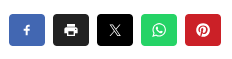
- 勾選 啟用「寄給朋友」( 'Email a friend' enabled) 核取方塊，以允許顧客使用「寄給朋友」選項。
- 若有需要，可勾選 允許匿名使用者寄給朋友 (Allow anonymous users to email a friend)。
商品比較
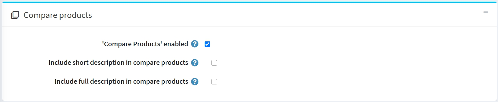
商品比較選項讓顧客能夠根據商品的特性與價格進行比較，進而做出最佳的購物決策。請依照下列步驟設定「商品比較」區塊：
- 勾選 「商品比較」已啟用 核取方塊，即可讓顧客在前台網站比較商品選項。此後，「加入比較清單」按鈕將會出現在商品頁面上。
- 勾選 在商品比較中包含簡短說明 核取方塊，即可在商品比較頁面上顯示簡短的商品說明。
- 勾選 在商品比較中包含詳細說明 核取方塊，即可在商品比較頁面上顯示詳細的商品說明。
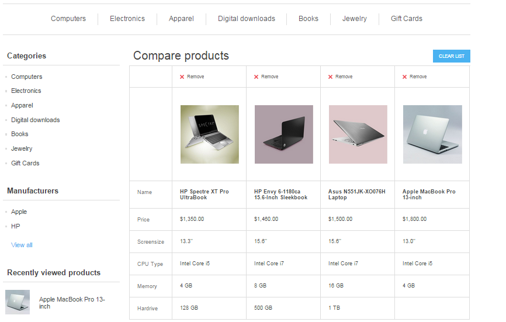
額外區段
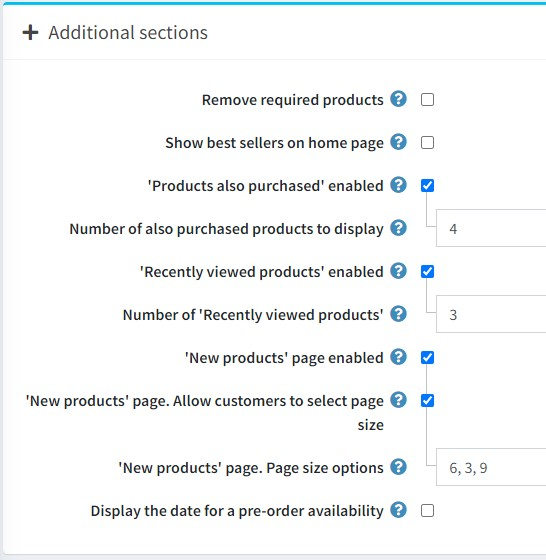
額外區段 面板允許您設定以下選項：
- 勾選 移除必要商品 (Remove required products) 核取方塊，以便在移除主要商品時，自動從購物車中移除必要商品。
- 首頁顯示暢銷商品 (Show best sellers on home page) 允許您在首頁顯示暢銷商品。
- 如果勾選了前一個核取方塊，您將能夠輸入 首頁暢銷商品數量 (Number of best sellers on home page)。
- 勾選 啟用「也購買了此商品的顧客也購買了...」 ('Products also purchased' enabled) 核取方塊，讓顧客能夠查看購買上述商品的其他人所購買的其他商品列表。
- 當啟用上述選項時，會出現 顯示「也購買了此商品」的商品數量 (Number of also purchased products to display) 欄位。商店管理者可在此設定要顯示的商品數量。
- 勾選 啟用「最近瀏覽過的商品」 ('Recently viewed products' enabled) 核取方塊，讓顧客能夠查看在您商店中最近瀏覽過的商品。
- 在 「最近瀏覽過的商品」數量 (Number of 'Recently viewed products') 欄位中，輸入勾選前一個核取方塊後要顯示的最近瀏覽商品數量。
- 如果您希望在商店中啟用「新商品」頁面，請勾選 啟用「新商品」頁面 ('New products' page enabled) 核取方塊。
- 在 「新商品」頁面。頁面大小選項 ('New products' page. Page size options) 欄位中，輸入勾選 啟用「新商品」頁面 後要顯示的最近新增商品數量。
- 若有需要，請勾選 顯示預購商品的到貨日期 (Display the date for a pre-order availability) 核取方塊。
商品欄位
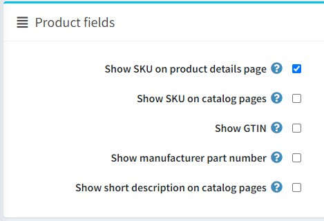
在 商品欄位 面板中，您可以設定下列選項：
- 在商品詳細頁面顯示 SKU。
- 在目錄頁面顯示 SKU。
- 在前台網站顯示 GTIN。
- 在前台網站顯示製造商零件編號。
- 在前台網站目錄頁面顯示簡短描述。
商品頁面
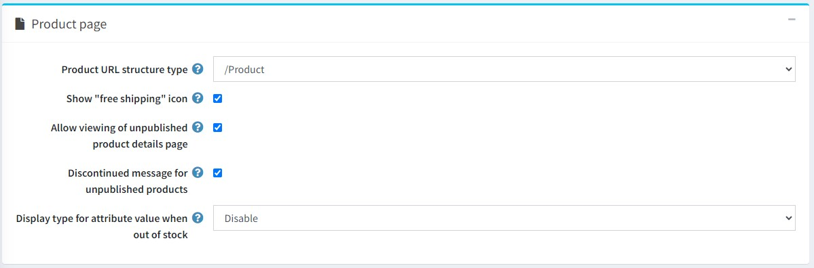
在 商品頁面 面板中，您可以設定以下選項：
商品 URL 結構類型。可選值：
- /Product
- /Category/Product
- /Manufacturer/Product
顯示「免運費」圖示：針對已啟用此選項的商品顯示圖示。
允許檢視未發布商品的詳細資料頁面。在此情況下，SEO 不會受到影響，搜尋引擎爬蟲仍會索引該頁面，即使商品暫時未發布且對顧客隱藏。請注意，商店管理員始終可以存取未發布的商品。
勾選 未發布商品的停產訊息 核取方塊，以便在顧客嘗試存取未發布商品的詳細資料頁面時，顯示「該商品已停產」的訊息。
缺貨時屬性值的顯示類型。若屬性組合已缺貨，您可以選擇將其顯示為停用或正常顯示。
Note
請注意，該商品必須啟用 僅允許現有的屬性組合 選項。
目錄頁面
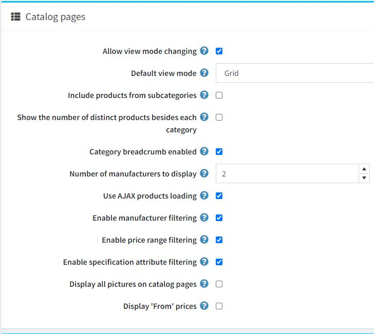
目錄頁面 (Catalog pages) 面板可讓您設定：
- 允許變更檢視模式：設定於類別與製造商頁面。
- 預設檢視模式：可選擇 網格 (Grid) 或 清單 (List)。
- 包含子類別商品：在檢視類別詳細資料頁面時。
- 顯示各類別旁的商品數量：在前台網站左側欄位的類別導覽區塊中顯示。
- 若有需要，請開啟 顯示各類別旁的商品數量 設定。
- 啟用類別麵包屑：勾選後即可啟用類別路徑（麵包屑）。這是顯示於螢幕頂端的列，標示出商品頁面所在的類別與子類別層級。列中的每個子項目都是一個獨立的超連結。
- 要顯示的製造商數量：設定於製造商導覽區塊中。
- 使用 AJAX 商品載入：在目錄頁面上以非同步方式載入商品（適用於「分頁」、「篩選」、「檢視模式」）。
- 啟用製造商篩選：啟用目錄頁面上的製造商篩選功能。
- 啟用價格範圍篩選：啟用目錄頁面上的價格範圍篩選功能。
- 啟用規格屬性篩選：若有需要，可在目錄頁面上啟用規格屬性篩選。若關閉此項，即便您已建立相關屬性，規格屬性篩選也不會顯示在目錄頁面上。
- 在目錄頁面上顯示所有圖片：在目錄頁面上將可檢視商品的所有圖片。
- 顯示「起」價格：勾選後，即可在目錄頁面上顯示「起」價格。這將根據屬性與組合的價格調整，顯示商品的最低可能價格，而非顯示固定的基礎價格。若啟用此功能，建議同時啟用「快取商品價格」設定。但請注意，若您使用了複雜的折扣、折扣需求規則等，可能會影響效能。
Tip
若要在目錄頁面上顯示商品的簡短描述，您需要啟用此設定：catalogsettings.showshortdescriptiononcatalogpages
標籤
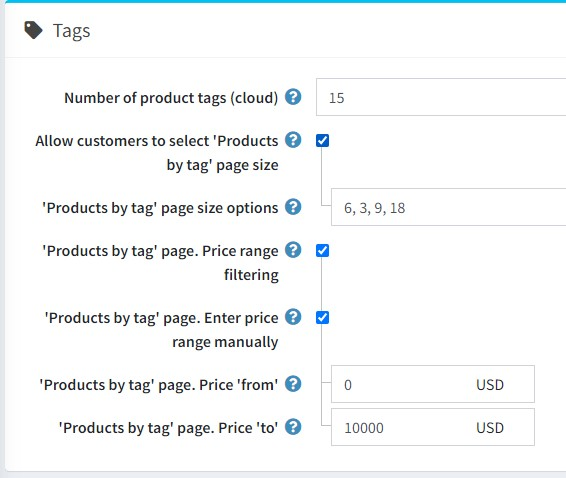
在 標籤 面板中，您可以定義：
- 商品標籤數量 (雲端) — 標籤雲中顯示的標籤數量。
- 允許顧客選擇「依標籤搜尋商品」頁面大小：允許顧客從商店擁有者預先定義的清單中選擇頁面大小。若停用此功能，顧客將無法選擇頁面大小，而改由商店擁有者進行設定。
- 若選取了上述選項，「依標籤搜尋商品」頁面大小選項 欄位將會顯示。您可以輸入讓商店使用者可選擇的數值，數值之間請用逗號分隔，第一個數值將會成為預設值。
- 若停用 允許顧客選擇「依標籤搜尋商品」頁面大小 設定，則會顯示 「依標籤搜尋商品」頁面。每頁顯示商品數 欄位。請在此欄位輸入您希望在搜尋頁面上顯示的商品數量。
- 若您想要啟用依價格區間篩選的功能，請勾選 「依標籤搜尋商品」頁面。價格區間篩選 核取方塊。
- 若您希望手動輸入價格區間，請勾選 「依標籤搜尋商品」頁面。手動輸入價格區間 核取方塊。
- 若啟用了上述設定，請輸入 「依標籤搜尋商品」頁面。價格「從」。
- 以及 「依標籤搜尋商品」頁面。價格「至」。
- 若您希望手動輸入價格區間，請勾選 「依標籤搜尋商品」頁面。手動輸入價格區間 核取方塊。
稅務
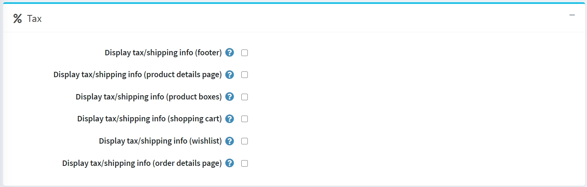
在「稅務」面板中，提供了一些針對德國的特定稅務/運費資訊選項：
- 顯示稅務/運費資訊（頁尾）。
- 顯示稅務/運費資訊（商品詳細頁面）。
- 顯示稅務/運費資訊（商品區塊）。
- 顯示稅務/運費資訊（購物車）。
- 顯示稅務/運費資訊（願望清單）。
- 顯示稅務/運費資訊（訂單詳細頁面）。
匯出/匯入
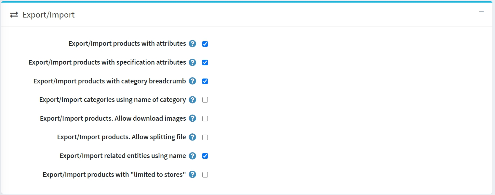
在 匯出/匯入 面板中，您可以設定：
- 若您需要在匯出/匯入商品時同時匯出/匯入商品屬性，請勾選 匯出/匯入帶有屬性的商品 核取方塊。
- 若商品應連同規格屬性一起匯出/匯入，請勾選 匯出/匯入帶有規格屬性的商品 核取方塊。
- 若商品應以完整的分類名稱（包含所有父分類名稱）進行匯出/匯入，請勾選 匯出/匯入帶有分類麵包屑的商品 核取方塊。
- 若分類應使用分類名稱進行匯出/匯入，請勾選 使用分類名稱匯出/匯入分類 核取方塊。
- 若在匯出商品時允許從遠端伺服器下載圖片，請勾選 匯出/匯入商品。允許下載圖片 核取方塊。
- 若您希望從自動從主檔案建立的最佳大小個別檔案匯入商品，請勾選 匯出/匯入商品。允許分割檔案 核取方塊。此功能將協助您以較小的延遲匯入大量資料。
- 若相關實體應使用名稱進行匯出/匯入，請勾選 使用名稱匯出/匯入相關實體 核取方塊。
- 若商品應連同其「限制於商店」屬性一起匯出/匯入，請勾選 匯出/匯入帶有「限制於商店」的商品 核取方塊。
Note
當您擁有兩種或多種語言時，匯出/匯入 Excel/XML 功能支援多語言資料。
商品排序
在 商品排序 面板中，您可以設定以下項目：
勾選 允許商品排序 核取方塊，即可在類別頁面和供應商頁面上啟用商品排序選項。您可以啟用或停用依據 位置、名稱、價格 和 建立日期 的排序功能。
Note
選擇「位置」值表示商品排序將不會有任何限制。
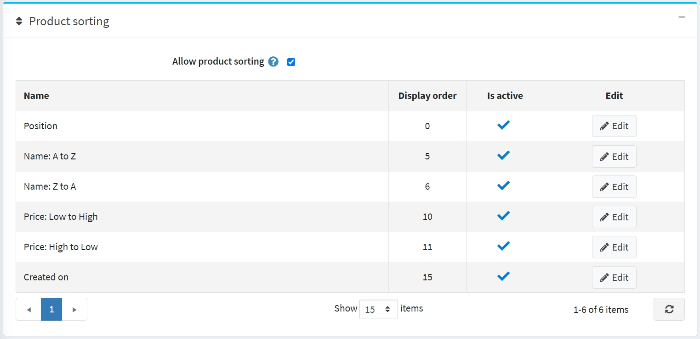
您可以點擊 編輯 按鈕來編輯每個選項的 顯示順序 與 是否啟用 屬性。